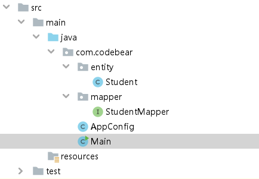
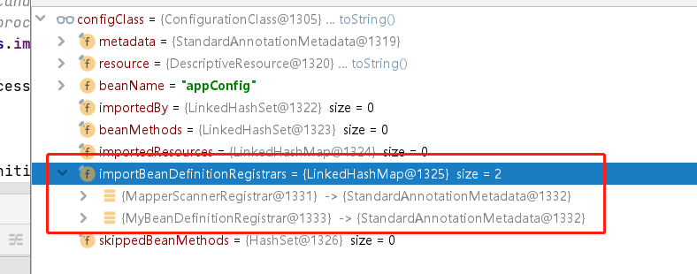

Spring MyBatis 和 Spring 整合的奥秘¶
本篇博客源码分析基于 Spring 5.1.16.RELEASE，mybatis-spring 2.0.0，较高版本的 mybatis-spring 源码有较大区别。
Spring 之所以是目前 Java 最受欢迎的框架，几乎所有的 Java 项目都在使用，就是因为它良好的生态，很多技术可以与之整合，为什么其他技术可以和 Spring 相整合，就是因为 Spring 拥有很多扩展点，阅读 Spring 源码，有一部分原因就是有必要清楚的知道 Spring 提供了哪些扩展点，而怎么合理的利用这些扩展点，就需要了解其他技术是如何利用这些扩展点的。
今天我就来带着大家看下，国内最流行的数据库框架 MyBatis 是如何利用 Spring 的扩展点的，从而双剑合璧，让 Spring+MyBatis 成为国内最流行的技术搭配。
前置知识¶
为了后面的故事可以顺利展开，很有必要先给大家介绍下，阅读 mybatis-spring 源码的前置知识，没有这些前置知识阅读 mybatis-spring 源码是寸步难行。
mybatis-spring 使用¶
因为现在有了 SpringBoot，所以 Mybatis 和 Spring 的整合变得非常简单，但是如果没有 SpringBoot，该怎么整合呢？我翻阅了百度的前几页，不知道是不是搜索关键词问题，几乎全是用 XML 的方式去整合 Mybatis 和 Spring 的，零 XML 配置，它不香吗？
代码结构： 
{kind=link}
具体实现：
<dependencies>
<dependency>
<groupId>org.mybatis</groupId>
<artifactId>mybatis-spring</artifactId>
<version>2.0.0</version>
</dependency>
<!-- https://mvnrepository.com/artifact/org.springframework/spring-context -->
<dependency>
<groupId>org.springframework</groupId>
<artifactId>spring-context</artifactId>
<version>5.1.16.RELEASE</version>
</dependency>
<!-- https://mvnrepository.com/artifact/org.mybatis/mybatis -->
<dependency>
<groupId>org.mybatis</groupId>
<artifactId>mybatis</artifactId>
<version>3.4.0</version>
</dependency>
<!-- https://mvnrepository.com/artifact/org.springframework/spring-jdbc -->
<dependency>
<groupId>org.springframework</groupId>
<artifactId>spring-jdbc</artifactId>
<version>5.1.10.RELEASE</version>
</dependency>
<!-- https://mvnrepository.com/artifact/mysql/mysql-connector-java -->
<dependency>
<groupId>mysql</groupId>
<artifactId>mysql-connector-java</artifactId>
<version>6.0.5</version>
</dependency>
</dependencies>
@MapperScan("com.codebear.mapper")
@ComponentScan
public class AppConfig {
@Bean
public SqlSessionFactory sqlSessionFactory() throws Exception {
DriverManagerDataSource dataSource = new DriverManagerDataSource();
dataSource.setDriverClassName("com.mysql.jdbc.Driver");
dataSource.setUrl("jdbc:mysql://localhost:3306/test?useUnicode=true&characterEncoding=UTF-8&serverTimezone=UTC");
dataSource.setUsername("root");
dataSource.setPassword("123456");
SqlSessionFactoryBean factoryBean = new SqlSessionFactoryBean();
factoryBean.setDataSource(dataSource);
return factoryBean.getObject();
}
}
@Repository
public interface StudentMapper {
@Select("select * from student")
List<Student> getList();
}
public class Main {
public static void main(String[] args) {
ApplicationContext applicationContext = new AnnotationConfigApplicationContext(AppConfig.class);
System.out.println(applicationContext.getBean(StudentMapper.class).getList());
}
}
运行结果：
[Student{id=1, name='疫苗王', age=20}, Student{id=2, name='阿修罗独角仙', age=18}, Student{id=3, name='地底王', age=18}]
Import 注解¶
如果我们想把一个类注册到 Spring 容器中，可以采用的方法有很多，其中一种是利用 Import 注解，Import 注解有三种用法，mybatis-spring 利用的是其中一种用法，Import 了 ImportBeanDefinitionRegistrar 类，所以我们这里只看 Import ImportBeanDefinitionRegistrar。
如何使用¶
public class MyBeanDefinitionRegistrar implements ImportBeanDefinitionRegistrar {
public void registerBeanDefinitions(AnnotationMetadata annotationMetadata, BeanDefinitionRegistry beanDefinitionRegistry) {
System.out.println(annotationMetadata.getAnnotationTypes());
}
}
写一个类实现 ImportBeanDefinitionRegistrar ，重写其中的 registerBeanDefinitions 方法。
@Import(MyBeanDefinitionRegistrar.class)
@ComponentScan
@MapperScan("com.codebear.mapper")
public class AppConfig {
@Bean
public SqlSessionFactory sqlSessionFactory() throws Exception {
DriverManagerDataSource dataSource = new DriverManagerDataSource();
dataSource.setDriverClassName("com.mysql.jdbc.Driver");
dataSource.setUrl("jdbc:mysql://localhost:3306/test?useUnicode=true&characterEncoding=UTF-8&serverTimezone=UTC");
dataSource.setUsername("root");
dataSource.setPassword("123456");
SqlSessionFactoryBean factoryBean = new SqlSessionFactoryBean();
factoryBean.setDataSource(dataSource);
return factoryBean.getObject();
}
}
在配置上加上@Import 注解，写上刚才写的 MyBeanDefinitionRegistrar 类。
运行结果：
[org.springframework.context.annotation.Import, org.springframework.context.annotation.ComponentScan, org.mybatis.spring.annotation.MapperScan]
从 registerBeanDefinitions 两个入参的命名来看，第一个参数，Spring 把注解元数据给你了，而第二个参数，Spring 是直接把 beanDefinition 的注册器给你了。
追本溯源¶
下面我们来看看 Spring 在什么时候处理@Import 注解的，又是什么时候调用 registerBeanDefinitions 方法的，当然这里不是 Spring 源码分析，我不会详细一行行翻译，而是简单的找到源头。
//AnnotationConfigApplicationContext#AnnotationConfigApplicationContext(Class<?>... componentClasses)
public AnnotationConfigApplicationContext(Class<?>... componentClasses) {
this();
register(componentClasses);
refresh();
}
进入第三行的 refresh()方法。
refresh 方法做了很多事情，我们只需要关心 invokeBeanFactoryPostProcessors 方法：
执行 invokeBeanFactoryPostProcessors 方法，顾名思义，这个方法是执行 BeanFactoryPostProcessor 的。什么，你不知道什么是 BeanFactoryPostProcessor？你可以简单的理解为 Spring 遵循插件化式的开发，其中有一个插件叫 ConfigurationClassPostProcessor，实现了 BeanDefinitionRegistryPostProcessor，同时 BeanDefinitionRegistryPostProcessor 又实现了 BeanFactoryPostProcessor，通过 ConfigurationClassPostProcessor 的 postProcessBeanDefinitionRegistry 的方法，Spring 完成了扫描。
//PostProcessorRegistrationDelegate#invokeBeanFactoryPostProcessors
invokeBeanDefinitionRegistryPostProcessors(currentRegistryProcessors, registry);
这一步传入了 BeanDefinitionRegistryPostProcessor 的集合，要执行 BeanDefinitionRegistryPostProcessor 的 postProcessBeanDefinitionRegistry 方法，集合有一个元素是我们关心的，就是上面提到的 ConfigurationClassPostProcessor。
//PostProcessorRegistrationDelegate#invokeBeanDefinitionRegistryPostProcessors
for (BeanDefinitionRegistryPostProcessor postProcessor : postProcessors) {
postProcessor.postProcessBeanDefinitionRegistry(registry);
}
循环传入的 BeanDefinitionRegistryPostProcessor 集合，调用 postProcessBeanDefinitionRegistry 方法，我们直接进入到 ConfigurationClassPostProcessor 的 processConfigBeanDefinitions 方法，找到关键解析代码：
//ConfigurationClassPostProcessor#processConfigBeanDefinitions
parser.parse(candidates);
//ConfigurationClassParser#parse
parse(((AnnotatedBeanDefinition) bd).getMetadata(), holder.getBeanName());
//ConfigurationClassParser#processConfigurationClass
doProcessConfigurationClass(configClass, sourceClass);
//ConfigurationClassParser#doProcessConfigurationClass
processImports(configClass, sourceClass, getImports(sourceClass), true);
重点来了，终于找到了我们的目标：处理@Import 注解。
//ConfigurationClassParser#processImports
configClass.addImportBeanDefinitionRegistrar(registrar, currentSourceClass.getMetadata());
//ConfigurationClass#addImportBeanDefinitionRegistrar
this.importBeanDefinitionRegistrars.put(registrar, importingClassMetadata);
这个 importBeanDefinitionRegistrars 就是一个 Map：
//ConfigurationClass
private final Map<ImportBeanDefinitionRegistrar, AnnotationMetadata> importBeanDefinitionRegistrars = new LinkedHashMap<>();
让我们就监视下 configClass：  可以看到我们写的 MyBeanDefinitionRegistrar 被放入了 importBeanDefinitionRegistrars ，我们需要记住这个集合，至于还有一个什么，这里不用关心，当然，聪明的小伙伴肯定知道这是什么了。
{kind=link}
我们写的 MyBeanDefinitionRegistrar 只是被放入了一个 Map，并没有执行，下面我们要找找它是在哪里执行的。
我们需要回到 ConfigurationClassPostProcessor 的 processConfigBeanDefinitions 方法：
//ConfigurationClassPostProcessor#processConfigBeanDefinitions
this.reader.loadBeanDefinitions(configClasses);
//ConfigurationClassBeanDefinitionReader#loadBeanDefinitions
loadBeanDefinitionsForConfigurationClass(configClass, trackedConditionEvaluator);
//ConfigurationClassBeanDefinitionReader#loadBeanDefinitionsForConfigurationClass
loadBeanDefinitionsFromRegistrars(configClass.getImportBeanDefinitionRegistrars());
这个集合是不是有点眼熟，就是我在上面让大家记住的集合，这个集合就存放着我们的写的 MyBeanDefinitionRegistrar 类，让我们继续点进去：
//ConfigurationClassBeanDefinitionReader#loadBeanDefinitionsFromRegistrars
private void loadBeanDefinitionsFromRegistrars(Map<ImportBeanDefinitionRegistrar, AnnotationMetadata> registrars) {
registrars.forEach((registrar, metadata) ->
registrar.registerBeanDefinitions(metadata, this.registry));
}
循环传入的 ImportBeanDefinitionRegistrar 集合，调用 registerBeanDefinitions 方法，我的天，终于找到执行方法了。
FactoryBean¶
Spring 就像是一个魔术师的袋子，而 FactoryBean 就是被魔术师装进袋子的香蕉，当魔术师打开袋子，发现香蕉变成鸽子了。
如何使用¶
@Component
public class MyFactoryBean implements FactoryBean<Teacher> {
public Teacher getObject() {
Teacher teacher = new Teacher();
teacher.setName("琦玉老师");
return teacher;
}
public Class<?> getObjectType() {
return Teacher.class;
}
}
public class Main {
public static void main(String[] args) {
ApplicationContext applicationContext = new AnnotationConfigApplicationContext(AppConfig.class);
System.out.println(applicationContext.getBean(MyFactoryBean.class));
System.out.println(applicationContext.getBean(Teacher.class));
System.out.println(applicationContext.getBean("&myFactoryBean"));
System.out.println(applicationContext.getBean("myFactoryBean"));
System.out.println(applicationContext.getBean("myFactoryBean").hashCode());
System.out.println(applicationContext.getBean("myFactoryBean").hashCode());
}
}
运行结果：
可以很清楚的看到从 FactoryBean 里面又生产出了一个 Bean，生产出来的 Bean 就是 FactoryBean 中 getObject 方法返回的。
追本溯源¶
和上面一样，我们也要看看 FactoryBean 中的 getObject 是在哪里执行的，我们先来做个试验：
我们在 getObject 里面加上一句打印的代码：
@Component
public class MyFactoryBean implements FactoryBean<Teacher> {
public Teacher getObject() {
System.out.println("getObject");
Teacher teacher = new Teacher();
teacher.setName("琦玉老师");
return teacher;
}
public Class<?> getObjectType() {
return Teacher.class;
}
}
然后只保留 main 方法中的创建 ApplicationContext 方法：
public class Main {
public static void main(String[] args) {
ApplicationContext applicationContext = new AnnotationConfigApplicationContext(AppConfig.class);
}
}
运行后，你会发现，控制台没有任何输出，我们大胆的猜想，FactoryBean 生产出来的 Bean 并不是预先加载的，而是采用懒加载的机制，也就是只有需要，才会去加载。
我们继续改下 main 方法：
public static void main(String[] args) {
ApplicationContext applicationContext = new AnnotationConfigApplicationContext(AppConfig.class);
System.out.println(applicationContext.getBean(Teacher.class));
}
运行结果：
所以我们的猜想是正确的，这次入口是 getBean。
下面还是枯燥无味的寻找，这次的寻找之旅更复杂：
//org.springframework.beans.factory.support.DefaultListableBeanFactory#getBean(java.lang.Class<T>)
public <T> T getBean(Class<T> requiredType) throws BeansException {
return getBean(requiredType, (Object[]) null);
}
// org.springframework.beans.factory.support.DefaultListableBeanFactory#getBean(java.lang.Class<T>, java.lang.Object...)
Object resolved = resolveBean(ResolvableType.forRawClass(requiredType), args, false);
//org.springframework.beans.factory.support.DefaultListableBeanFactory#resolveBean
NamedBeanHolder<T> namedBean = resolveNamedBean(requiredType, args, nonUniqueAsNull);
//org.springframework.beans.factory.support.DefaultListableBeanFactory#resolveNamedBean(org.springframework.core.ResolvableType, java.lang.Object[], boolean)
String[] candidateNames = getBeanNamesForType(requiredType);
//org.springframework.beans.factory.support.DefaultListableBeanFactory#getBeanNamesForType(org.springframework.core.ResolvableType)
return getBeanNamesForType(resolved, true, true);
//org.springframework.beans.factory.support.DefaultListableBeanFactory#getBeanNamesForType(java.lang.Class<?>, boolean, boolean)
resolvedBeanNames = doGetBeanNamesForType(ResolvableType.forRawClass(type), includeNonSingletons, true);
这个方法里面有一步是循环 beanDefinitionNames，当循环到 myFactoryBean 的时候，判断这是一个 FactoryBean：
随后执行 isTypeMatch(beanName, type)方法：
//org.springframework.beans.factory.support.AbstractBeanFactory#isTypeMatch(java.lang.String, org.springframework.core.ResolvableType)
Class<?> type = getTypeForFactoryBean((FactoryBean<?>) beanInstance);
//org.springframework.beans.factory.support.FactoryBeanRegistrySupport#getTypeForFactoryBean
return factoryBean.getObjectType();
当执行到这里，我们写的 MyFactoryBean 的 getObjectType 方法被调用了，返回 Teacher.class，而我们现在要找的也是 Teacher.class，所以匹配。
随后回到 DefaultListableBeanFactory#doGetBeanNamesForType，把 beanName 放入一个集合中：
随后返回集合。
再回到 DefaultListableBeanFactory#resolveNamedBean，会判断返回出来的集合的元素的个数，显然只返回一个，执行
//org.springframework.beans.factory.support.DefaultListableBeanFactory#resolveNamedBean
if (candidateNames.length == 1) {
String beanName = candidateNames[0];
return new NamedBeanHolder<>(beanName, (T) getBean(beanName, requiredType.toClass(), args));
}
继续点开 getBean 方法：
//org.springframework.beans.factory.support.AbstractBeanFactory#getBean(java.lang.String, java.lang.Class<T>, java.lang.Object...)
return doGetBean(name, requiredType, args, false);
//org.springframework.beans.factory.support.AbstractBeanFactory#doGetBean
bean = getObjectForBeanInstance(sharedInstance, name, beanName, null);
//org.springframework.beans.factory.support.AbstractBeanFactory#getObjectForBeanInstance
object = getObjectFromFactoryBean(factory, beanName, !synthetic);
//org.springframework.beans.factory.support.FactoryBeanRegistrySupport#getObjectFromFactoryBean
doGetObjectFromFactoryBean(factory, beanName);
//org.springframework.beans.factory.support.FactoryBeanRegistrySupport#doGetObjectFromFactoryBean
object = factory.getObject();
直到这里，才执行了我们写的 MyFactoryBean 的 getObject 方法，拿到了我们返回的 Teacher 对象后。
因为有缓存机制如果我们再去拿，就不会再次调用 getObject 方法了，这个缓存机制就不再继续分析了，比较复杂，就算不了解也不影响我们今天的主题。
JDK 动态代理¶
我以前写过 JDK 动态代理的博客，大家可以找来看一看 ，这里就不阐述了。
mybatis-spring 源码分析¶
前置知识介绍完成，有了上面的前置知识，我们就可以一探 MyBatis 和 Spring 整合的奥秘。
Mybatis 和 Spring 整合的入口很好找，就是我们再配置上添加的@MapperScan 注解，当我们点开@MapperScan：
@Retention(RetentionPolicy.RUNTIME)
@Target(ElementType.TYPE)
@Documented
@Import(MapperScannerRegistrar.class)
@Repeatable(MapperScans.class)
public @interface MapperScan {
}
你会发现一个很熟悉的注解，就是我们上面讲的 Import 注解，Import 了 MapperScannerRegistrar。
通过上面的源码分析明白，Spring 会执行到 registerBeanDefinitions 方法：
@Override
public void registerBeanDefinitions(AnnotationMetadata importingClassMetadata, BeanDefinitionRegistry registry) {
// 拿到我们写的MapperScan注解上带的东西，我们写的，只有一个Value字段。
AnnotationAttributes mapperScanAttrs = AnnotationAttributes
.fromMap(importingClassMetadata.getAnnotationAttributes(MapperScan.class.getName()));
if (mapperScanAttrs != null) {
registerBeanDefinitions(mapperScanAttrs, registry);
}
}
继续深入 registerBeanDefinitions 方法：
// 创建了一个扫描器，这个扫描器继承了Spring定义的扫描器：ClassPathBeanDefinitionScanner，
// 扫描的主要是主要作用就是扫描，把bean放到map中去
ClassPathMapperScanner scanner = new ClassPathMapperScanner(registry);
//省略
basePackages.addAll(
Arrays.stream(annoAttrs.getStringArray("value"))
.filter(StringUtils::hasText)
.collect(Collectors.toList()));
//省略
scanner.registerFilters();
scanner.doScan(StringUtils.toStringArray(basePackages));
这里主要是创建了一个扫描器，传入了一些规则。
scanner.registerFilters()中有一行代码，比较重要：
// mybatis定义的扫描器最终的扫描任务是交给Spring的扫描器执行的，
// Spring的扫描器中定义了includeFilters，只有符合规则的最终才可以被扫描出来，
// 这里意味着mybatis告诉spring，任何东西你都要给我扫描出来。
addIncludeFilter((metadataReader, metadataReaderFactory) -> true);
让我们看下 scanner.doScan(StringUtils.toStringArray(basePackages))方法：
@Override
public Set<BeanDefinitionHolder> doScan(String... basePackages) {
//交给Spring执行扫描任务，返回beanDefinition、beanName的包装对象，这里就把我们
//@MapperScan注解中给定的com.codebear.mapper包中所有的内容都扫描
//并且返回出来了。
Set<BeanDefinitionHolder> beanDefinitions = super.doScan(basePackages);
if (beanDefinitions.isEmpty()) {
LOGGER.warn(() -> "No MyBatis mapper was found in '" + Arrays.toString(basePackages) + "' package. Please check your configuration.");
} else {
processBeanDefinitions(beanDefinitions);
}
return beanDefinitions;
}
继续看 processBeanDefinitions 方法：
// 省略
for (BeanDefinitionHolder holder : beanDefinitions) {
definition.setBeanClass(this.mapperFactoryBean.getClass());
}
//省略
这个循环中，有一行代码很是重要，把扫描出来的 bean 的 BeanClass 都设置成了 mapperFactoryBean，这个 mapperFactoryBean 是何方神圣呢？没错，它就是我们上面分析过的 FactoryBean，通过实验和分析，我们知道了最终产生的 bean 对象是 FactoryBean 中的 getObject 返回的对象。
public T getObject() throws Exception {
return getSqlSession().getMapper(this.mapperInterface);
}
public SqlSession getSqlSession() {
return this.sqlSessionTemplate;
}
//org.mybatis.spring.SqlSessionTemplate#getMapper
public <T> T getMapper(Class<T> type) {
return getConfiguration().getMapper(type, this);
}
//org.apache.ibatis.binding.MapperRegistry#getMapper
public <T> T getMapper(Class<T> type, SqlSession sqlSession) {
MapperProxyFactory<T> mapperProxyFactory = (MapperProxyFactory)this.knownMappers.get(type);
if (mapperProxyFactory == null) {
throw new BindingException("Type " + type + " is not known to the MapperRegistry.");
} else {
try {
return mapperProxyFactory.newInstance(sqlSession);
} catch (Exception var5) {
throw new BindingException("Error getting mapper instance. Cause: " + var5, var5);
}
}
}
//org.apache.ibatis.binding.MapperProxyFactory#newInstance(org.apache.ibatis.session.SqlSession)
//sqlSession是SqlSessionTemplate
public T newInstance(SqlSession sqlSession) {
// 这里需要用到JDK动态代理的知识，传入了SqlSessionTemplate，Mapper类（接口）
MapperProxy<T> mapperProxy = new MapperProxy(sqlSession, this.mapperInterface, this.methodCache);
return this.newInstance(mapperProxy);
}
// 生成了代理对象
protected T newInstance(MapperProxy<T> mapperProxy) {
return Proxy.newProxyInstance(this.mapperInterface.getClassLoader(), new Class[]{this.mapperInterface}, mapperProxy);
}
最终我们调用代理对象的方法，会执行到 MapperProxy 的 invoke 方法：
public Object invoke(Object proxy, Method method, Object[] args) throws Throwable {
if (Object.class.equals(method.getDeclaringClass())) {
try {
return method.invoke(this, args);
} catch (Throwable t) {
throw ExceptionUtil.unwrapThrowable(t);
}
}
final MapperMethod mapperMethod = cachedMapperMethod(method);
return mapperMethod.execute(sqlSession, args);
}
当我们点开 mapperMethod.execute 方法，你会觉得一切是那么的熟悉。